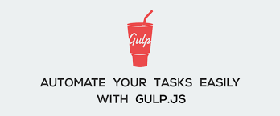
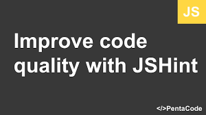
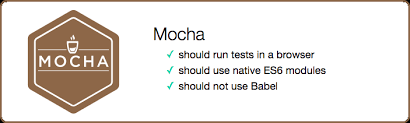

- Grunt
- Gulp 
- JSHint 
- JSLint
- ESLint
- TSLint

- Karma
- Mocha >
- Jest
- Protractor
- Git
- GitHub
- Mercurial
- SVN
WebStorm is a powerful IDE for modern JavaScript development perfectly equipped for complex client-side development and server-side development with Node.js.
WebStorm features advanced support for JavaScript, HTML, CSS, and their modern alternatives, as well as for frameworks such as Angular or React.
WebStorm also integrates with various web development tools and version control systems.
Intelligent Editor with coding assistance for JavaScript, Node.js, ECMAScript 6, TypeScript, CoffeeScript, and Dart as well as for HTML, CSS, Less, Sass and Stylus.
Coding assistance includes syntax highlighting, documentation lookup, and refactorings.
Powerful navigation across the project and advanced refactorings. Support for modern frameworks: React, Angular, AngularJS, Vue.js, Express, and more. Built-in debugger for client-side code and Node.js.

Voir les liens suivant :
le help de WebstormAller à la page 2 en cliquant sur le lien suivant :
Aller à la page 3 en cliquant sur le lien suivant :